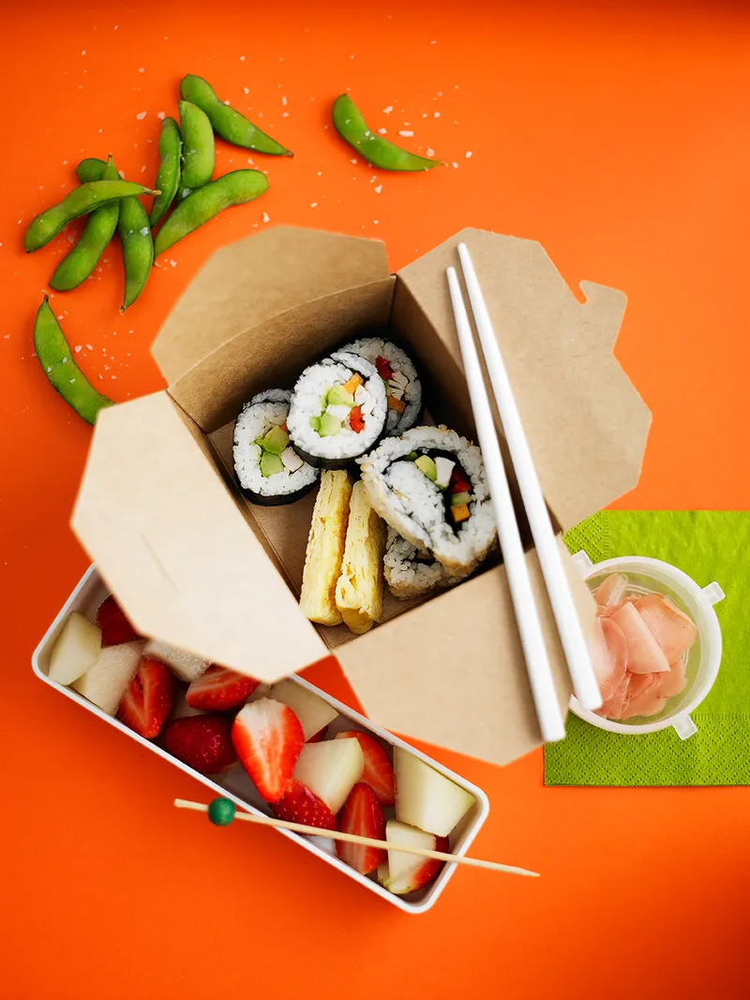

Sushi Rolls

Sushi Rolls
VEGETARIAN VEGAN GLUTEN-FREE DAIRY-FREE
This Sushi Rolls recipe is a classic, veary delecious and easy to make
Ingredients
- 200 g sushi rice
- 1 tablespoon rice vinegar
- 2 sheets of nori
- ¼ of a cucumber
- ¼ of a red pepper
- ½ a carrot
- ½ a small ripe avocado
Steps
Put the rice in a small saucepan with 375ml water, leave to soak for 30 minutes, then bring to the boil.
Put the lid on and simmer gently for 10 minutes, until the water has been absorbed by the rice.
In a bowl, dissolve the sugar in the vinegar, then sprinkle over the rice mix, combining with a rubber spatula so as not to break up the rice.
In a bowl, dissolve the sugar in the vinegar, then sprinkle over the rice mix, combining with a rubber spatula so as not to break up the rice.
Add some vegetables in a horizontal line across the rice.
Begin rolling the mat from the near edge, keeping the filling in place with your fingers. Roll firmly but not too hard.
Remove the roll from the mat and cut into 6 or 8 pieces. Repeat with second piece of nori.